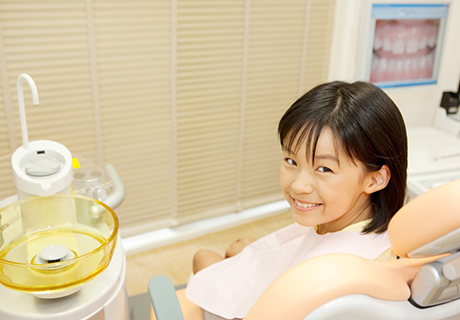
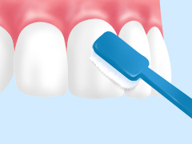
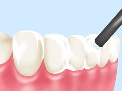
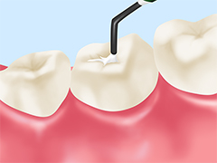
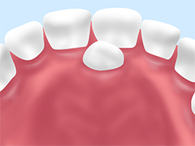
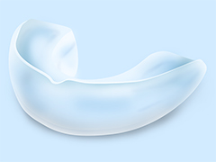

- ホーム
- 小児歯科
むし歯のない永久歯列を～小児歯科～
福岡県春日市の歯医者「かすが歯科」の小児歯科では、予防を中心にお子様の歯を虫歯からお守りする診療を行っています。
大切なお子様の歯、「虫歯にさせたくない」と願われるお母様・お父様は多いでしょう。しかし子どもはまだ自分でお口の健康を守ることはできません。お子様を虫歯にさせないためには、ご家族の方の意識が重要です。私たちはご家族の方と協力し、一緒にお子様のお口の健やかな成長をサポートいたします。
子どもが虫歯になるおもな3つの要因
| 要因1 乳歯は虫歯になりやすい |
要因2 うまくブラッシングできない |
要因3 食べカスが溜まりやすい |
|---|---|---|
乳歯は永久歯に比べて表面のエナメル質が薄く、虫歯に対する抵抗力が弱い特徴があります。そのため虫歯になりやすく、さらに進行しやすいのです。 つまり乳歯の時期はとくに「虫歯にならないようにする」予防が大切になります。 |
虫歯予防の基本はブラッシングですが、子どもはまだ自分できちんと歯をみがくことができません。 自分でブラッシングする習慣をつけながら、ご家族の方が仕上げみがきをしてあげましょう。 |
乳歯の奥歯には深く複雑な溝があり、そこに食べカスが溜まりやすいため虫歯になりやすい特徴があります。 その溝をレジンで埋める「シーラント」という処置で、虫歯予防を行うことをおすすめします。 |
当院の小児歯科について
「歯医者に行きたくない！」小さな子どもたちが、そんな風に泣いていませんか？ 当院ではお子様を泣かせず、時間通りに治療を終える、「また歯医者に行きたい！」と言ってもらえるような診療を目指しています。
子どもたちにとってもっとも大切なことは、「虫歯のない永久歯列を育てること」です。そのため小中学生の子どもたちの永久歯を、必要だからといってすぐに削ることがないよう配慮しています。永久歯は「寿命のある消耗品」です。これから長い人生を送っていく子どもたちの永久歯、どうしたら寿命を延ばせるかを重視して治療に取り組みます。
また当院が開業以来8年間にわたって地域のお母様のご意見を聞いてきた中で感じているのが、「子どもの虫歯予防・口腔機能の管理」と「歯並びの問題の解決」を同時に行える歯科医院が多くないことです。
そこで当院では、この両方にきちんと対応できる歯科医院でありたいと考えています。1歳を過ぎ歯が生え始めたころのお子様から診察させていただき、その子が6歳前後になってから、必要に応じて自然と矯正治療に移行する。そのような流れで、お子様のお口を永く、包括的にサポートいたします。
矯正治療については、「月1回矯正専門医の来院に合わせて診察する」というようなことはなく、常時そのほかの治療と併せて院長が対応していきますので、ご安心ください。
歯医者が苦手なお子様のために

お子様が一度「歯医者をこわい」と感じてしまうと、その後の治療も受けられなくなってしまうかもしれません。そこでまずは診療台に座ることから慣れてもらい、徐々に治療できる雰囲気に誘導しながらゆっくりと治療を進めていきます。
またお子様にもわかりやすい言葉で、お子様の目線になってお話しするよう心がけ、お子様自身にも納得して治療を受けてもらえるよう配慮しています。
削らない治療へのこだわり
当院では、お子様の大切な歯をできるだけ削らないよう配慮して治療を行っています。歯は一度削ってしまえば元に戻すことができません。どうしても削る必要がある場合には、細心の注意を払って削りすぎないようにしています。
またすべての治療において拡大鏡を使用しており、しっかり目で見て確認しながら処置を進めることでも、削りすぎを防いでいます。
小児歯科メニュー
ブラッシング指導

予防の基本となるブラッシングを正しく行えるよう、まずは日ごろのみがき方を確認し、歯並びやお口の環境などをふまえて一人ひとりに合った効果的なみがき方を指導します。ご家族の方には仕上げみがきのポイントもお教えします。
フッ素塗布

歯質を強化する効果があるフッ素を、歯の表面に塗布し、虫歯予防につなげます。定期的に行うことがより効果的です。またごく初期であれば、これによって虫歯が治癒するケースもあります。
シーラント

奥歯にある深い溝には汚れが溜まりやすいため、虫歯になりやすのが特徴です。そこであらかじめレジン（歯科用プラスチック）で埋めてしまい、虫歯を予防するのがシーラントです。お子様向けの処置です。
過剰歯の抜歯

まれに、通常の本数より多い歯が生えてくることがあります。これが「過剰歯」であり、歯並びを乱したり虫歯になりやすかったりとトラブルを招くため、多くの場合抜歯します。
ムーシールド

受け口を改善するために使用する、マウスピース型の装置です。3歳から使用でき、受け口を改善しながら正しい顎の成長を導きます。
食育
食事やおやつの選び方、与えるタイミングなど、「食」は虫歯のなりやすさに大きく関わっています。「やわらかいものや甘いおやつばかりになっていないか」「だらだら食べ続ける習慣がないか」など、お子様の日ごろの食事について伺い、問題があれば指導を行います。
口腔機能トレーニング
当院では小児矯正について多くの実績を持っており、その経験から得た口腔機能のトレーニングについてのノウハウがあります。お子様のお口の状態を見ながら、必要に応じてトレーニングを行います。
マタニティ歯科検診とは？
女性は妊娠するとホルモンバランスが変化したり、つわりが始まったりする上に、飲食物の好みが変わるなどしてお口の環境が悪化しやすくなります。その結果、虫歯や歯周病になりやすくなるため注意が必要です。
中でも歯周病は早産や低体重児出産の確率を高めることがわかっています。またお母様に虫歯があると、出産後に子どもに虫歯をうつしてしまう「母子感染」が起こるリスクもあるのです。
当院では妊婦様向けに「マタニティ歯科検診」を行っています。ご来院時には、妊娠中のお母様の口腔内管理はもちろんのこと、これから元気に生まれてくる赤ちゃんの健康なお口の育て方、また授乳のアドバイスなどを行っています。
お母様自身と大事なお子様の健康のために、安定期に入ったら一度ご来院ください。当院は、産後にも、母子ともに通っていただけるような医院であり続けられるよう努めてまいります。